Analog and Digital Control Systems
Instrumentasi 1.2
Imron Rosyadi
Learning Objectives
By the end of this session, you should be able to:
- Define control error and describe the practical objectives of a process-control system.
- Distinguish stability, steady-state regulation, and transient regulation, and interpret typical response plots.
- Explain and compare analog, digital, and ON/OFF control in real-world systems.
- Describe ADC/DAC roles and the structure of supervisory and direct digital control.
- Interpret basic process-control drawings (P&IDs) and standard signal conventions (4–20 mA, 3–15 psi).
- Use SI and English units, metric prefixes, and define accuracy, sensitivity, hysteresis, resolution, and linearity.
Roadmap
- Control System Evaluation
- Error and control objectives
- Stability, steady-state, transient response
- Damped and cyclic criteria (minimum area, quarter amplitude)
- Analog & Digital Processing
- Analog vs digital data
- ON/OFF, analog, and digital control (supervisory, DDC, smart sensors, fieldbus)
- Units & Standards in Process Control
- SI base units, metric prefixes, conversions
- 4–20 mA and pneumatic standards
- Accuracy, resolution, linearity, P&IDs
Control Error and Objective
The basic performance variable in feedback control is the error:
\[ e(t) = r - c(t) \]
- \(r\): setpoint or reference (often constant, sometimes time-varying).
- \(c(t)\): controlled (measured) variable.
- \(e(t)\): difference between desired and actual value.
Ideal but impossible goal: make \(e(t) = 0\) for all \(t\).
Realistic goal: keep the error small enough and well-behaved in time for the process requirements.
Important
Three practical control objectives
- The system must be stable.
- It should have good steady-state regulation (small long-term error).
- It should have good transient regulation (acceptable behavior during changes and disturbances).
Stability – Why Controllers Can Make Things Worse
A controller changes the process input based on measurement feedback. If tuned improperly, this feedback can destabilize the process.
- Before control: output drifts randomly.
- After control is turned on: initially regulated near setpoint.
- Later: oscillations grow → instability caused by the control loop.

Warning
Tightening control (increasing gain, making it more aggressive) usually improves performance up to a point, then dramatically increases instability risk.
Interactive: Visualizing an Unstable Response
Steady-State Regulation
Steady-state regulation focuses on the long-term error after all transients die out.
- Goal: minimize steady-state error.
- Often specified as an allowable band around setpoint: \(\pm \Delta c\).
Example:
- Target temperature: \(150^{\circ}\text{C}\).
- Allowable variation: \(\pm 2^{\circ}\text{C}\).
- Acceptable range: \(148^{\circ}\text{C} \le c(t) \le 152^{\circ}\text{C}\).
If the output drifts beyond this band, the control system must act to bring it back.
Tip
Steady-state performance is usually improved by integral action in a PID controller, but at the cost of slower transients or increased oscillation risk.
Transient Regulation
Transient regulation describes how the controlled variable behaves during sudden changes:
- Setpoint changes (e.g., jump from \(150^{\circ}\text{C}\) to \(160^{\circ}\text{C}\)).
- Disturbances (e.g., inlet flow or ambient temperature suddenly changes).
Key questions:
- How fast does the system reach the new setpoint?
- How big is the maximum error (overshoot or undershoot)?
- Does it ring/oscillate, and how long until it “settles”?
Note
Transient response is usually characterized by:
- Duration \(t_D\) (rise/settling time).
- Maximum error \(e_{\max}\).
- Whether the response is damped or cyclic/oscillatory.
Evaluation Criteria – Big Picture
How do we judge how “good” a control loop is?
- Stability:
- Output remains bounded for bounded inputs.
- No growing oscillations or runaway behavior.
- Steady-State Response:
- How small is the long-term error?
- How well does it stay within the allowable band?
- Transient Response:
- How does it respond to setpoint steps and disturbances?
- Tradeoff between speed (short \(t_D\)) and overshoot (small \(e_{\max}\)).
Evaluation Criteria – Big Picture
Tuning = adjusting controller parameters (e.g., PID gains) to balance these aspects.
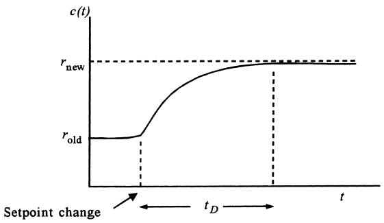

Damped Response Criteria
In damped response, the error does not change sign; it approaches the setpoint monotonically.
Key metrics:
- Duration \(t_D\):
- For a setpoint change: time for output to go from 10% to 90% of the total change.
- For a disturbance: time from the start of disturbance until output is within 4% of reference.
- Maximum error \(e_{\max}\):
- Peak deviation from the reference during the transient.
Different tuning → different \((e_{\max}, t_D)\) pairs for the same input.
Tip
Process designers must choose a compromise: - Smaller \(e_{\max}\) but longer \(t_D\), or - Larger \(e_{\max}\) but shorter \(t_D\).
Cyclic (Underdamped) Response
Sometimes the desired response is allowed to oscillate around the setpoint.
In cyclic response:
- Output oscillates about reference.
- Parameters of interest:
- Maximum error \(e_{\max}\).
- Duration / settling time \(t_D\):
- From when error first exceeds allowable band
- To when it returns within the band and stays there.
Again, tuning adjusts the balance between overshoot and speed.
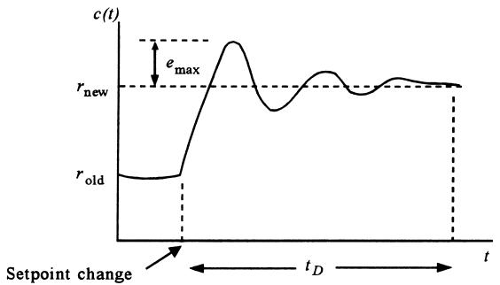 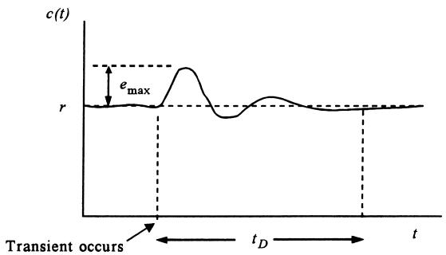
Cyclic Tuning Criteria: Minimum Area and Quarter Amplitude
Two common criteria for oscillatory responses:
- Minimum-area criterion
- Minimize area under \(|e(t)|\) vs. time curve: \[ A = \int |e(t)|\,dt = \text{minimum} \]
- Intuitively: minimize “total error energy” during the transient.
- Quarter-amplitude criterion
- Each peak is 1/4 of the previous: \[ a_2 = \frac{a_1}{4},\quad a_3 = \frac{a_2}{4}, \dots \]
- Provides a specific underdamped oscillation pattern – reasonably fast decay with some overshoot.
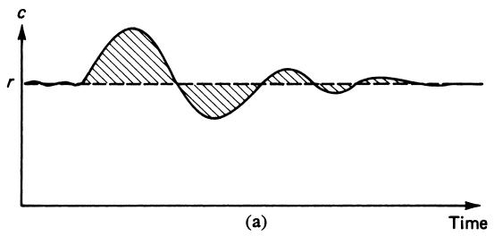 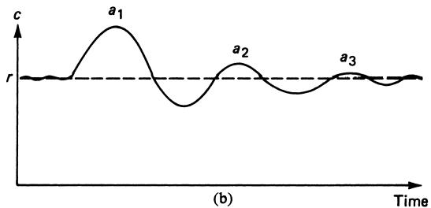
Problem Example: Choosing a Response
Scenario: You are tuning a temperature loop. A step change in setpoint causes the following:
- Tuning A:
- \(e_{\max} = 8^{\circ}\text{C}\), \(t_D = 1.0\ \text{min}\).
- Tuning B:
- \(e_{\max} = 2^{\circ}\text{C}\), \(t_D = 4.0\ \text{min}\).
Specification: maximum allowable deviation is \(\pm 3^{\circ}\text{C}\).
Question: Which tuning is acceptable, and which would you choose if you must also keep product quality high?
Solution Walkthrough
- Check specification:
- Allowable deviation ±3°C from setpoint.
- Evaluate Tuning A:
- \(e_{\max} = 8^{\circ}\text{C} > 3^{\circ}\text{C}\).
- Violates spec → unacceptable.
- Evaluate Tuning B:
- \(e_{\max} = 2^{\circ}\text{C} \le 3^{\circ}\text{C}\).
- Meets spec, even though it is slower.
- Choose Tuning B:
- Better steady-state and transient within allowable band.
- For product quality, overshoot and undershoot beyond tolerance are more damaging than slower settling.
Tip
Key lesson: Performance specs constrain tuning choices – sometimes you must accept slower response to maintain quality and safety.
Analog vs Digital Processing in Control
Historically:
- Controllers were analog electronic circuits using op-amps, resistors, capacitors → analog processing.
- Now, most controllers are implemented by digital computers / microcontrollers → digital processing.
Analog processing:
- Variables represented by continuous voltages/currents.
Digital processing:
- Variables represented as binary numbers (bits) in a computer.
We still use analog sensors/actuators, but internal control logic is often digital.
Analog vs Digital Data Representation
Analog Data
- Smooth, continuous relationship between variable \(c\) and representation \(b\).
- Every small change \(\delta c\) produces a proportional change \(\delta b\).
- Can be linear or nonlinear.
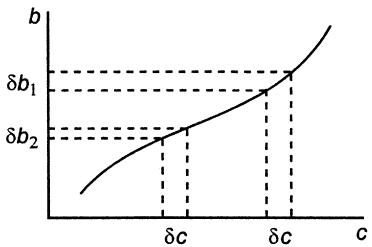
Digital Data
- Variable \(c\) represented by discrete numeric value \(n\) (binary).
- Limited resolution: many nearby \(c\) values map to the same \(n\).
- Small changes may produce no change in code until threshold is passed.
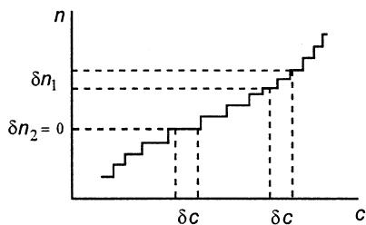
Digital Encoding Example – 4 Bits for 0–15 V
Table 1: Decimal-binary-hex encoding (4 bits)
| Voltage | Binary | Hex |
| 0 | 0000 | 0h |
| 1 | 0001 | 1h |
| 2 | 0010 | 2h |
| 3 | 0011 | 3h |
| 4 | 0100 | 4h |
| 5 | 0101 | 5h |
| 6 | 0110 | 6h |
| 7 | 0111 | 7h |
| 8 | 1000 | 8h |
| 9 | 1001 | 9h |
| 10 | 1010 | Ah |
| 11 | 1011 | Bh |
| 12 | 1100 | Ch |
| 13 | 1101 | Dh |
| 14 | 1110 | Eh |
| 15 | 1111 | Fh |
- Range: 0–15 V, resolution = 1 V per LSB.
- Any two voltages between 4 and 5 V will both be encoded as
0100. - Cannot distinguish between 4.25 V and 4.75 V.
Note
Increasing number of bits increases resolution: - 4 bits → 16 levels - 8 bits → 256 levels - 12 bits → 4096 levels
ADCs and DACs in Control Loops
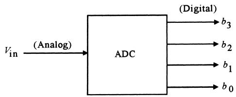
- ADC (Analog-to-Digital Converter):
- Converts analog sensor output (e.g., voltage) into digital code for the computer.
- DAC (Digital-to-Analog Converter):
- Converts digital controller output into an analog voltage or current for actuators.
In process control:
- Sensors → analog → ADC → computer → DAC → analog actuators (valves, heaters).
ON/OFF Control – Basic Digital Behavior
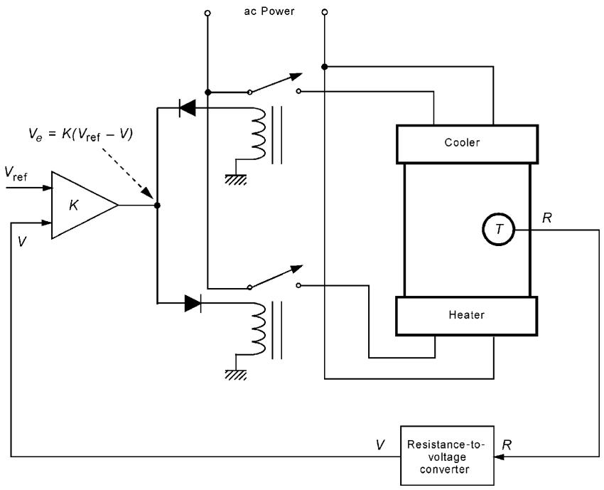
- Final control elements (heater/cooler) have only two states: ON or OFF.
- Controller output is effectively a single bit: 0 or 1.
- Sensor and signal conditioning are analog, but decision is digital: \[ V_e = K(V_{\text{ref}} - V) \]
ON/OFF Control – Basic Digital Behavior
This system exhibits:
- Deadband: range of temperature where neither heater nor cooler is ON.
- Hysteresis: behavior differs depending on whether temperature is rising or falling (due to relay pull-in vs release voltages).
Real-world examples: home thermostats, water heaters, many HVAC systems.
Analog Control – Continuous Action
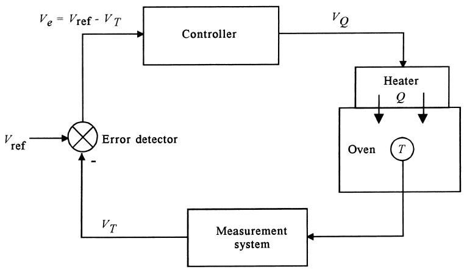
In true analog control:
- All variables are analog representations of physical quantities.
- Heater power \(Q\) is an analog function of excitation voltage \(V_Q\).
- Error signal \(E\) is analog: difference between reference \(V_{\text{ref}}\) and measured \(V_T\).
Analog Control – Continuous Action
Advantages:
- Smooth actuation (no abrupt ON/OFF).
- Can implement proportional, integral, derivative actions with continuous op-amp circuits.
Disadvantages:
- Component drift, noise, calibration over time.
- Less flexible compared to software changes in digital controllers.
Supervisory vs Direct Digital Control
Supervisory Control
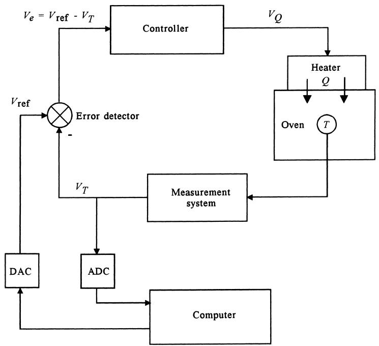
- Analog loops (like Figure 14) still do the real-time control.
- Computer monitors multiple loops and adjusts setpoints via ADC/DAC.
- If computer fails, analog loops continue using last setpoints.
Direct Digital Control (DDC)

- Controller function implemented entirely in software.
- ADC reads process variable; controller computes output; DAC drives actuator.
- Analog loop is replaced by digital logic.
Smart Sensors and Networked Control
Smart Sensor:
- Sensor + signal conditioning + ADC + microcontroller + (optionally) DAC in one housing.
- May output:
- 4–20 mA to a valve, or
- Digital data over a fieldbus (industrial LAN).
Smart Sensors and Networked Control
Networked Control Systems:
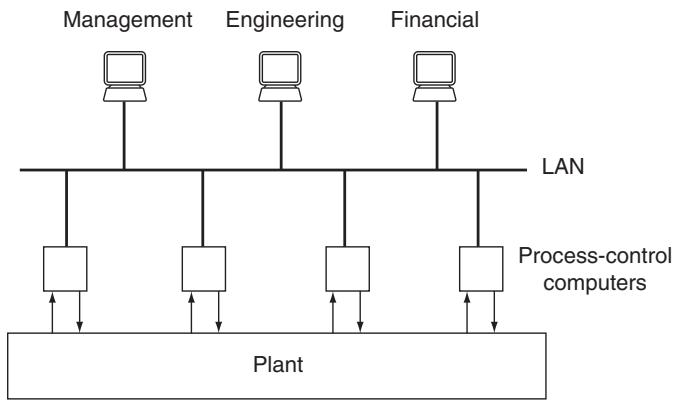
- Multiple DDC units distributed around plant.
- All connected via fieldbus (industrial LAN).
- Higher-level computers for:
- Supervisory control, optimization, scheduling, accounting, etc.
Common standards: Foundation Fieldbus, Profibus.
Programmable Logic Controllers (PLCs)
- PLCs evolved from electromechanical relay logic.
- Designed to control discrete-state devices: conveyors, valves, motors (ON/OFF).
- Programmed using ladder logic, function blocks, or structured text.
Modern PLCs can:
- Implement DDC for analog loops.
- Interface with smart sensors and fieldbus networks.
Programmable Logic Controllers (PLCs)

In Figure 18:
- Thermal limit switches detect high/low temperature thresholds.
- PLC logic decides whether to energize heater or cooler (still ON/OFF).
Units in Process Control – SI and English
Process-control engineers must fluently convert between:
- SI (Système International) units.
- English and other legacy units (CGS, etc.).
SI Base Units:
| Quantity | Unit | Symbol |
| Length | meter | m |
| Mass | kilogram | kg |
| Time | second | s |
| Electric current | ampere | A |
| Temperature | kelvin | K |
| Amount of substance | mole | mol |
| Luminous intensity | candela | cd |
| Plane angle | radian | rad |
| Solid angle | steradian | sr |
Derived units (examples):
- Force: newton \(1\ \text{N} = 1\ \text{kg·m/s}^2\).
- Energy: joule \(1\ \text{J} = 1\ \text{kg·m}^2/\text{s}^2\).
- Pressure: pascal \(1\ \text{Pa} = 1\ \text{N/m}^2\).
Worked Example – Pressure Unit Conversion
Example: Express \(p = 2.1 \times 10^{3}\ \text{dyne/cm}^2\) in pascals.
We know:
- \(10^2\ \text{cm} = 1\ \text{m}\).
- \(10^5\ \text{dyne} = 1\ \text{N}\).
So:
\[ p = \left(2.1 \times 10^{3}\ \frac{\text{dyne}}{\text{cm}^2}\right) \left(10^{2}\ \frac{\text{cm}}{\text{m}}\right)^2 \left(\frac{1\ \text{N}}{10^{5}\ \text{dyne}}\right) \]
Compute:
- \((10^2)^2 = 10^{4}\).
- \(2.1 \times 10^{3} \times 10^{4} / 10^{5} = 2.1 \times 10^{2} = 210\).
So:
\[ p = 210\ \frac{\text{N}}{\text{m}^2} = 210\ \text{Pa} \]
Metric Prefixes – Handling Very Large and Very Small Numbers
To simplify scientific notation, SI uses standard prefixes:
- \(10^{-6}\): micro (µ)
- \(10^{-3}\): milli (m)
- \(10^{3}\): kilo (k)
- \(10^{6}\): mega (M)
- \(10^{9}\): giga (G), etc.
Example: Express the following using decimal prefixes:
- \(0.0000215\ \text{s}\)
- \(3\,781\,000\,000\ \text{W}\)
Solution:
\[ 0.0000215\ \text{s} = 21.5 \times 10^{-6}\ \text{s} = 21.5\ \mu\text{s} \]
\[ 3\,781\,000\,000\ \text{W} = 3.781 \times 10^{9}\ \text{W} = 3.781\ \text{GW} \]
Analog Transmission Standards: 4–20 mA
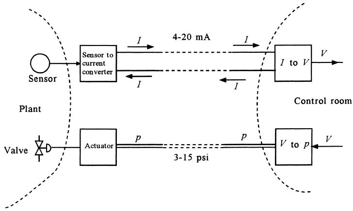
Most common electrical transmission standard: 4–20 mA.
- E.g., temperature range 20–120°C encoded as 4–20 mA.
- 20°C → 4 mA; 120°C → 20 mA.
- 0 mA typically used to indicate fault (broken wire, device failure).
Analog Transmission Standards: 4–20 mA
Why current instead of voltage?
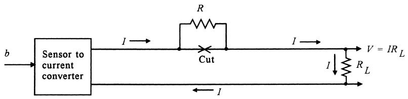
- Current loop is almost independent of wire resistance (0–1000 Ω).
- Voltage at receiver can vary, but as long as current is correct, the signal is accurate.
Example – 4–20 mA Temperature Mapping
Example 7:
Temperature range: 20–120°C mapped linearly to 4–20 mA.
Find:
- Current for \(T = 66^{\circ}\text{C}\).
- Temperature corresponding to \(I = 6.5\ \text{mA}\).
Derive linear relation:
Assume \(I = mT + I_0\).
At \(T = 20^{\circ}\text{C}\), \(I = 4\ \text{mA}\):
\[ 4 = 20m + I_0 \]
At \(T = 120^{\circ}\text{C}\), \(I = 20\ \text{mA}\):
\[ 20 = 120m + I_0 \]
Example – 4–20 mA Temperature Mapping
Subtract:
\[ 16 = 100m \Rightarrow m = 0.16\ \text{mA}/^{\circ}\text{C} \]
Then:
\[ I_0 = 4 - 20 \cdot 0.16 = 0.8\ \text{mA} \]
So:
\[ I = 0.16 T + 0.8 \]
- For \(T = 66^{\circ}\text{C}\):
\[ I = 0.16 \cdot 66 + 0.8 = 11.36\ \text{mA} \]
- For \(I = 6.5\ \text{mA}\):
\[ 6.5 = 0.16 T + 0.8 \Rightarrow T = \frac{5.7}{0.16} = 35.6^{\circ}\text{C} \]
Pneumatic Signal Standard
In pneumatic systems (air pressure in pipes):
Common standard (US): 3–15 psi.
For SI: 20–100 kPa is an equivalent standard.
A measured variable is converted to proportional air pressure.
Pressure propagates down long pipes without requiring electricity.
Advantages:
- Intrinsically safe in explosive environments.
- Historically reliable before widespread electronics.
Key Instrumentation Definitions (Block Model)
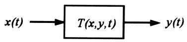
- Transfer function \(T(x, y, t)\): relationship between input \(x(t)\) and output \(y(t)\).
- Static transfer function: when input is constant (no time variation).
- Dynamic transfer function: when input/time variation matters (often differential equations).
Examples:
- Static: Flow meter, \(Q = 119.5 \sqrt{\Delta p}\).
- Dynamic: First-order lag, second-order system, etc. (later sections).
Error in control context:
- For measurements: difference between actual value and measured indication.
- For control: difference between setpoint and measured controlled variable.
Accuracy – Ways It Is Specified
Accuracy describes maximum expected error in instrument output.
Common forms:
- As a fixed value: e.g., ±2°C.
- As % of full-scale (FS): e.g., ±0.5% FS on 0–5 V → ±0.025 V.
- As % of span: e.g., ±3% of span on 20–50 psi → ±0.9 psi.
- As % of reading: e.g., ±2% of reading at 2 V → ±0.04 V.
Accuracy – Ways It Is Specified
Example 8:
Temperature sensor span: 20–250°C. Measurement \(= 55^{\circ}\text{C}\).
- Accuracy ±0.5% FS:
- FS = 250°C → error = ±0.005 × 250 = ±1.25°C.
- Actual temp: 53.75°C to 56.25°C.
- Accuracy ±0.75% of span:
- Span = 250–20 = 230°C → error = ±0.0075 × 230 = ±1.725°C.
- Actual temp: 53.275°C to 56.725°C.
- Accuracy ±0.8% of reading:
- Error = ±0.008 × 55°C = ±0.44°C.
- Actual temp: 54.56°C to 55.44°C.
System Accuracy – Combining Errors
Consider two cascaded blocks:
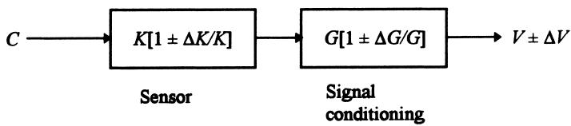
Output voltage:
\[ V \pm \Delta V = (K \pm \Delta K)(G \pm \Delta G) C \]
Approximating for small uncertainties:
\[ \frac{\Delta V}{V} \approx \pm \frac{\Delta K}{K} \pm \frac{\Delta G}{G} \tag{5} \]
So worst-case fractional error is the sum of individual fractional errors.
More realistic rms combination:
\[ \left[\frac{\Delta V}{V}\right]_{\text{rms}} = \pm \sqrt{\left(\frac{\Delta K}{K}\right)^2 + \left(\frac{\Delta G}{G}\right)^2} \]
System Accuracy – Combining Errors
Example 11:
- Transducer: \(10\ \text{mV} / (\text{m}^3/\text{s}) \pm 1.5\%\).
- Signal conditioning: \(2\ \text{mA/mV} \pm 0.5\%\).
Net transfer function: \(20\ \text{mA} / (\text{m}^3/\text{s})\).
Worst-case accuracy:
\[ \frac{\Delta V}{V} = \pm (0.015 + 0.005) = \pm 0.02 = \pm 2\% \]
RMS accuracy:
\[ \left[\frac{\Delta V}{V}\right]_{\text{rms}} = \pm \sqrt{0.015^2 + 0.005^2} \approx \pm 0.0158 \approx \pm 1.6\% \]
Sensitivity, Hysteresis, Resolution, Linearity
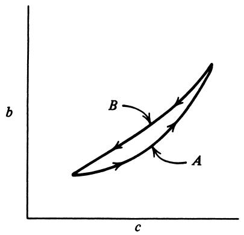
- Sensitivity: change in output per change in input.
- Example: 5 mV/°C.
- Hysteresis: different output for same input depending on direction of change (up vs down).
- Usually specified as % FS of max deviation between increasing and decreasing curves.
Sensitivity, Hysteresis, Resolution, Linearity
- Resolution: smallest change in input that produces a measurable change in output.
- Often % FS.
- Example 12: 0–150 N range, 0.1% FS resolution → 0.15 N smallest measurable step.
- Linearity: closeness of actual transfer curve to a straight line.
- Often specified as max deviation from best-fit straight line as % FS.
- See Figure 24.
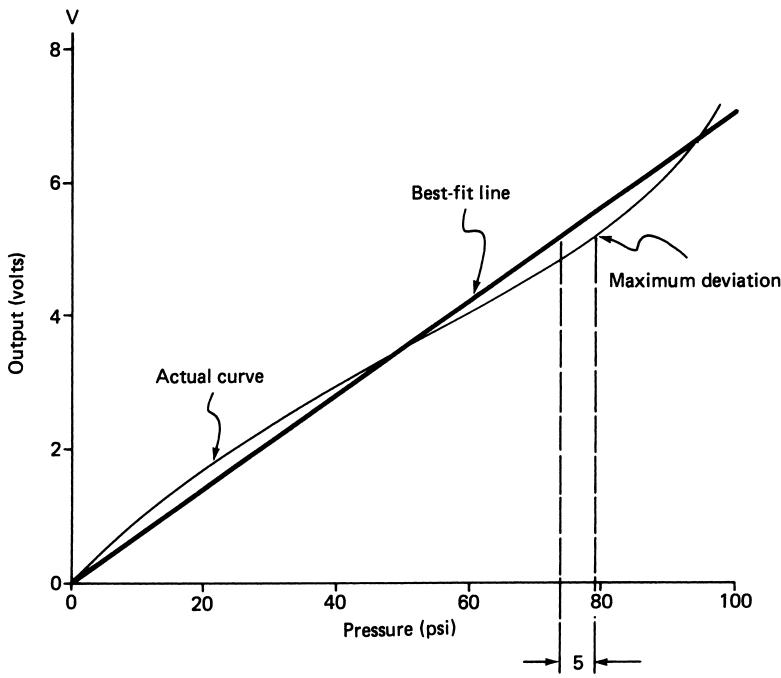
Process-Control Drawings: P&ID Overview
Piping and Instrumentation Diagrams (P&IDs) show:
- Process equipment (tanks, reactors, pumps).
- Product flow lines (usually heavy lines).
- Instruments: sensors, transmitters, controllers, valves, PLCs, computers.
- Signal types: analog current, pneumatic, digital bus.
Process-Control Drawings: P&ID Overview
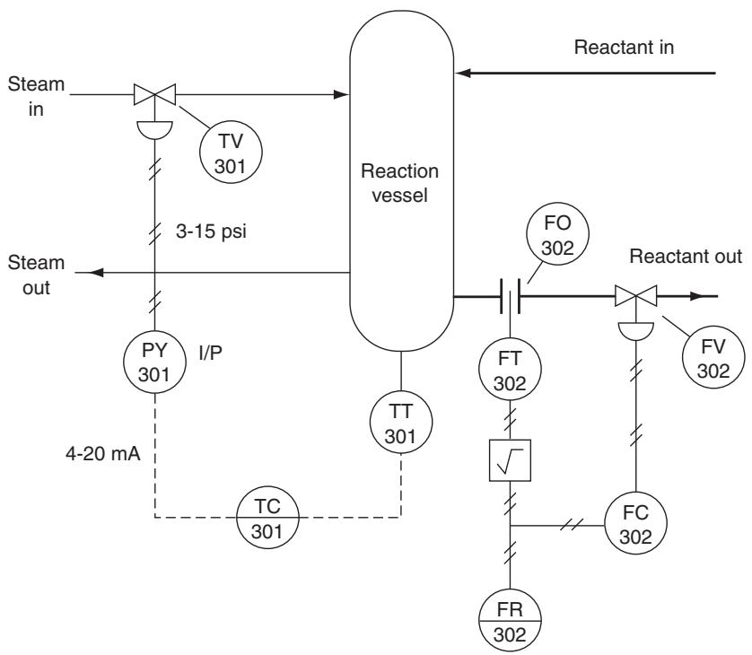
Standard: ANSI/ISA S5.1-1984 (R1992).
- Instrument symbols: circles, circles in boxes, with letter/number codes (e.g., TT/301).
- Line types indicate signal nature (4–20 mA, air pressure, digital).
P&ID Examples – Signals and Controllers
- TT/301: temperature transmitter.
- TC/301: temperature controller (accessed from control room).
- PY/301: I/P (current-to-pressure) converter.
- FT/302: flow transmitter; FC/302: flow controller; FR/302: flow recorder.
P&ID Examples – Signals and Controllers
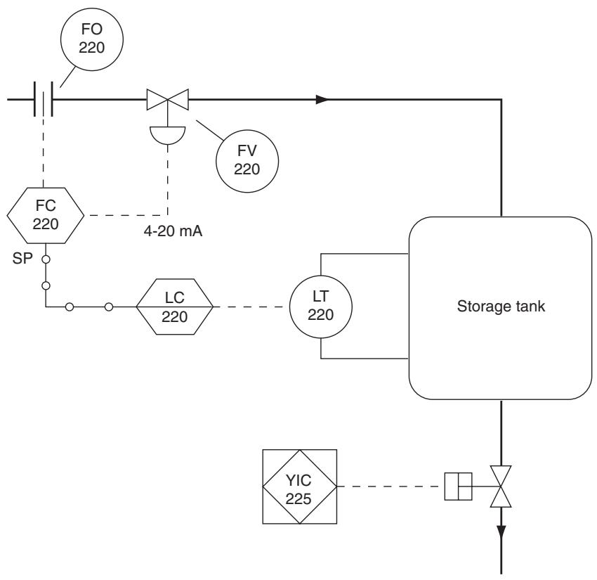
- LC/220: level controller in control room (computer).
- FC/220: flow control computer in field.
- YIC/225: PLC controlling a drain valve.
- Digital bus indicated by solid lines with small bubbles.
Interactive: Simple ADC Resolution Calculator
Summary / Key Points
- Control evaluation
- Error \(e(t) = r - c(t)\) is central.
- Three main objectives: stability, good steady-state regulation, and good transient regulation.
- Response criteria
- Damped vs cyclic responses.
- Metrics: duration \(t_D\), maximum error \(e_{\max}\).
- Cyclic tuning rules: minimum area, quarter amplitude.
- Analog vs digital processing
- Analog: continuous voltages/currents; can be nonlinear.
- Digital: discrete codes; limited resolution; requires ADC/DAC.
Summary / Key Points
- Control architectures
- ON/OFF control: simplest, widely used; introduces deadband/hysteresis.
- Analog control: continuous action using analog circuits.
- Supervisory control vs DDC; smart sensors; fieldbus (Foundation Fieldbus, Profibus).
- PLCs for discrete and DDC duties.
- Units and instrumentation definitions
- SI base units and metric prefixes; be comfortable converting.
- Industrial standards: 4–20 mA, 3–15 psi (20–100 kPa).
- Accuracy, sensitivity, hysteresis, resolution, linearity, and system accuracy (worst-case vs rms).
- P&IDs as the schematic language of process control.
Formulas & Relationships Summary
Error in control loop:
\[ e(t) = r - c(t) \]
Minimum-area cyclic criterion:
\[ A = \int |e(t)|\,dt = \text{minimum} \]
Linear mapping example (current vs temperature):
- For mapping \(T\) to \(I\): \[ I = mT + I_{0} \]
Combining transfer-function uncertainties:
Approximate worst-case fractional uncertainty: \[ \frac{\Delta V}{V} \approx \pm\frac{\Delta K}{K} \pm \frac{\Delta G}{G} \tag{5} \]
RMS combination: \[ \left[\frac{\Delta V}{V}\right]_{\text{rms}} = \pm \sqrt{\left(\frac{\Delta K}{K}\right)^2 + \left(\frac{\Delta G}{G}\right)^2} \]
Metric prefix usage examples:
\[ 0.0000215\ \text{s} = 21.5\ \mu\text{s} \]
\[ 3.781 \times 10^{9}\ \text{W} = 3.781\ \text{GW} \]
Sensor and system example sensitivities:
- Temperature sensor: 5 mV/°C → resolution and accuracy relate voltage to temperature via: \[ \Delta T = \frac{\Delta V}{5\ \text{mV}/^{\circ}\text{C}} \]